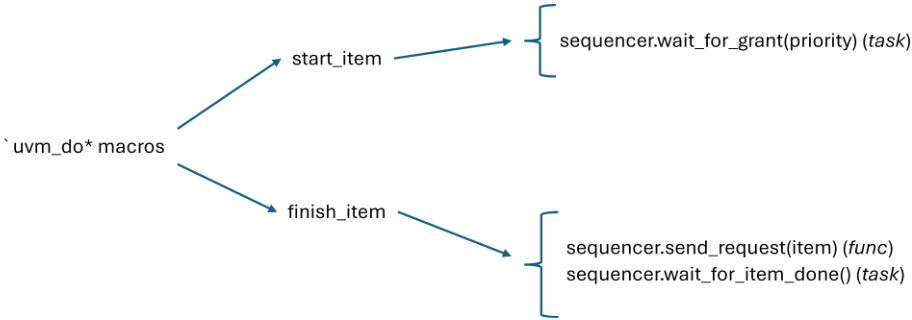
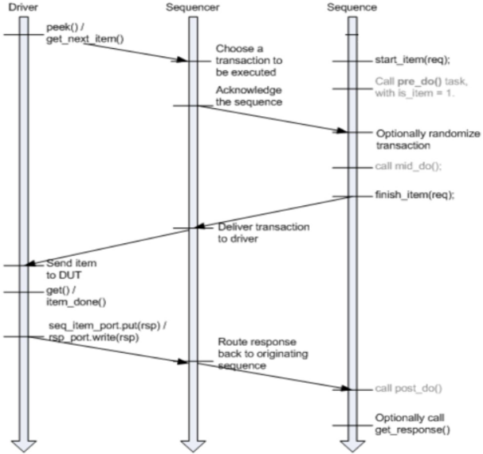
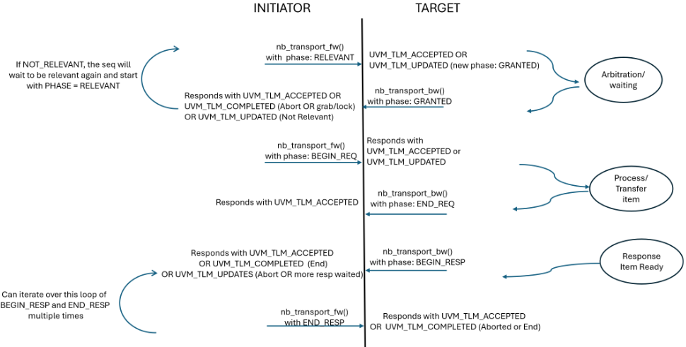
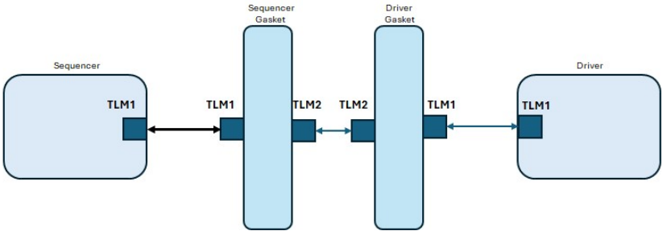
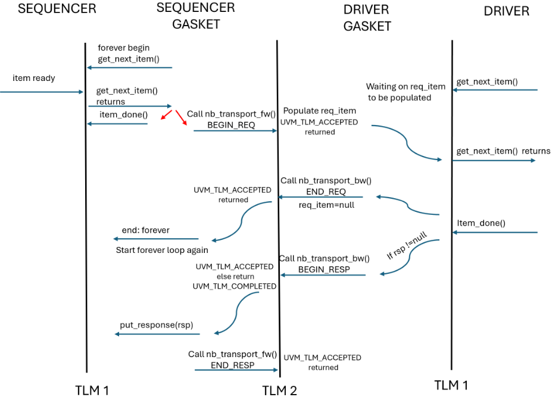
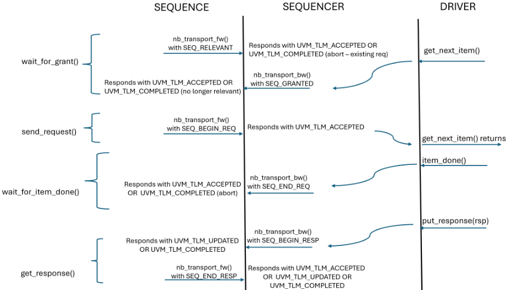
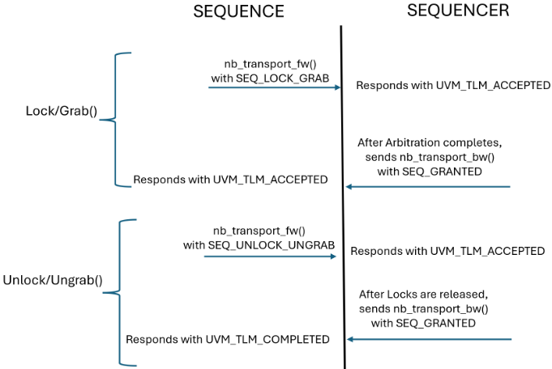

探索 UVM 中基于 TLM2 的 Sequence、Sequencer 与 Driver
UVM 现有的 sequence-sequencer-driver 通信协议继承自 OVM，早于 TLM 2.0 出现，是类 TLM1 的定制双向握手（get_next_item/item_done 等），语义不严格、复杂，且缺乏事务开始/结束与中止通知。论文提出向后兼容的 UVM 库更新：在 sequencer 与 driver 之间插入 Sequencer Gasket 与 Driver Gasket，对内保持 TLM1 接口、对外通过 nb_transport_fw/bw 将全部握手映射为 TLM2 非阻塞协议，且不改动现有 UVM driver/sequencer 实现；针对 sequence-sequencer 间含 late randomization、relevancy 检查与 lock/grab 的多步握手，设计了 uvm_tlm2_sequence_payload 公共容器类与 UVM_TLM2_SEQ_* 自定义 phase，并给出使用标准 TLM2 phase 加双 payload 类的替代方案。结论是现有全部阻塞 API 均可映射为 TLM2 非阻塞 API，从而获得更标准的通信协议、请求-响应自动配对、多响应支持以及与 TLM2 initiator 的互操作性；gasket 实现与测试已发布于 GitHub。论文未给出量化性能对比数据。
UVM 从 OVM 继承的 sequencer-driver 与 sequence-sequencer 通信协议在 TLM 2.0 出现前就已定型，是基于定制接口（uvm_seq_if_base）的类 TLM1 双向握手：它不是严格的 TLM1（无 try_get/can_get，try_next_item 也不等价于 try_get），sequence/sequencer 与 sequencer/driver 使用两套不同 API，握手复杂、存在 quasi-nonblocking 行为，且缺乏事务开始/结束通知与中止手段。论文要解决的问题是：能否将整个 sequence-sequencer-driver 通信栈完整、向后兼容地映射到 UVM TLM2 协议上。
提出向后兼容的 UVM 库扩展方案：1) 在 sequencer 与 driver 之间引入 Driver Gasket 与 Sequencer Gasket 两个转换组件，gasket 对内以 seq_item_pull_imp 等模拟 TLM1 sequencer/driver 行为，对外通过 target/initiator socket 与 nb_transport_fw/nb_transport_bw 实现 TLM2 非阻塞协议，使 get_next_item、item_done、put_response、try_next_item、peek、get 等全部现有握手均可由 TLM2 表达，且不干扰现有 UVM driver/sequencer；2) 对 sequence-sequencer 通信，构造继承 uvm_sequence_item 的公共容器类 uvm_tlm2_sequence_payload（携带 req/rsp 及 priority、lock_request、rerandomize、transaction_id 等参数）解决无 payload 握手问题，并定义 UVM_TLM2_SEQ_RELEVANT/GRANTED/BEGIN_REQ/END_REQ/BEGIN_RESP/END_RESP/ABORTED 等自定义 phase 以表达多步握手，lock/grab 通过 UVM_TLM2_SEQ_LOCK_GRAB phase 映射；3) 给出保持标准 TLM2 phase、使用 uvm_tlm2_grant_item 与 sequence payload 两个 payload 类的替代实现。
未在论文中说明
论文指出 TLM 2.0 引入 UVM 后，旧的 OVM 时代协议从未被更新过；本文的贡献在于证明现有 sequence-sequencer-driver 的全部阻塞 API 都可映射为 TLM2 非阻塞 API，并通过 gasket 转换实现向后兼容、不修改既有 UVM driver/sequencer。与直接套用标准 TLM2 不同，论文明确指出无法原样使用 TLM2，必须扩展 payload（容器类）或自定义 phase 才能表达 late randomization、relevancy 检查、lock/grab 等多步握手，并给出两种可选实现及其取舍分析。
相关度级别：high
命中能力域：2.4 设计验证方法学 | 2.7 EDA/验证自动化与 AI 辅助
理由：该论文直接命中 2.4 设计验证方法学的核心技术：团队为 LPDDR5X、HBM4、UCIe 等 IP 交付的所有 UVM testbench 都构建在 sequence-sequencer-driver 通信栈之上，agent 的 driver/sequencer 握手、response 回传与 virtual sequence 编排均依赖论文所分析的 seq_item_port 协议。若该提案被 UVM 标准采纳，将改变团队验证平台的基础通信语义（非阻塞化、请求-响应自动配对、多响应、可中止握手）；其 gasket 方案也提供了不改动既有 driver 即可引入 TLM2 互操作（如对接 TLM2 initiator）的渐进路径，公开的 gasket 实现与测试属于可复用验证组件，与 2.7 的可复用验证 IP/框架沉淀方向相关。
建议动作：深入精读并做内部分享
N. Goyal, J. Refice Nvidia Corporation 2888 San Tomas Expwy Santa Clara, CA 95051
摘要 - UVM（Universal Verification Methodology，通用验证方法学）中序列器（sequencer）与驱动器（driver）之间的通信机制沿袭自 OVM（Open Verification Methodology，开放验证方法学）。当该机制被加入 OVM 时，TLM 2.0（Transaction Level Modeling，事务级建模）尚不存在，因此该通信基于 TLM。当 TLM2.0 被引入 UVM 时，并未尝试对较早的基于 TLM 的 OVM 协议进行“更新”。
当前序列器与驱动器之间使用 seq_item_(ex)port 的协议提供了 get、put 和 peek 操作，但并不严格属于 UVM TLM1。序列（sequence）与序列器之间往复进行的通信需要握手（handshake），这增加了复杂性，而 UVM TLM1 并未对其进行妥善处理。
本文提出对 UVM 库的向后兼容更新，旨在将 TLM2.0 支持纳入序列-序列器-驱动器栈中，从而能够利用 TLM2.0 的各项特性。
现有的序列（sequence）-序列器（sequencer）-驱动器（driver）通信充其量只是类似 TLM1 的方式 [1]。序列<->驱动器栈已经得到了较为完善的描述，但它并不能很好地映射到 TLM，并且在并非严格需要的地方引入了时间开销。序列器与驱动器之间的通信通过一个受 TLM1 启发的特殊接口以及端口（port）/导出（export）来处理。我们将分析当前序列与序列器之间的通信，它是一种双向握手且较为复杂。我们还将探讨将这些协议映射到 UVM TLM2 的可能性以及所需的特殊处理。
探索将这种通信映射到 UVM TLM2 的可能性，其动机来自这样一个事实：TLM 2.0 允许进行非阻塞（零时间）通信，并且对事务（transaction）的开始和结束具有明确的通知，这有助于简化时序语义 [5]。TLM2.0 提供了一种更为健壮的传递协议级信息的方式。TLM2.0 通信允许多个响应，减少了将响应映射回其对应请求的需要，并且还能实现与 TLM2 发起者（initiator）的通信。
注 - 当提及 System C 时，使用的是 TLM 和 TLM 2.0；当提及 UVM 时，则是 UVM TLM1 和 UVM TLM2。在本文中，我们将分别用 TLM1 和 TLM2 来指代 UVM TLM1 和 UVM TLM2。
我们之所以探索将 TLM 2.0 应用于标准 UVM sequence-sequencer-driver 通信的可行性，主要出于两个关键考虑：一是解决当前类 TLM 1.0 协议的某些局限性，二是利用 TLM 2.0 的先进特性。具体而言，
现有的 sequencer-driver 通信使用专用接口进行通信，但并未采用标准的 TLM1 协议。UVM 为 driver 与 sequencer 之间的握手定义了自己的专用协议，
uvm_seq_if_base#(T1,T2)[3],[4] 。driver 与 sequencer 之间的握手需要双向通信才能实现同步握手。以下是它目前的工作方式：
使用 TLM1 进行 driver 与 sequencer 通信的明显缺点是——
针对 sequence，有多种可用的应用程序接口（API），例如 `uvm_do、`uvm_create/`uvm_send 以及 start_item/finish_item。从代码来看，这些方法的层次结构如下所示 [3],[4]：

根据图 1，与 sequencer 通信的最后三个方法为：
sequence、sequencer 与 driver 之间的通信所需的不仅仅是 TLM1 的单向协议。目前 sequence/sequencer 之间以及 sequencer/driver 之间的协议是对 TLM1 的定制，以满足其特殊需求。当前的实现也类似于 TLM1，但并不是 TLM1。例如，在该实现中不存在 try_get 或 can_get，而现有的方法 try_next_item 也并不等价于 try_get。
尽管经过了定制，UVM 仍然有两套完全不同的 API 用于 sequence/sequencer 之间以及 sequencer/driver 之间的通信。这是不必要的复杂化，使用户更难理解该协议。
UVM 中定制的 TLM1 解决了以下问题：
sequencer 与 driver 之间的交互需要是双向的，以便支持后期随机化（late randomization）并提供发送更新后 item 的能力。类似地，sequence 与 sequencer 之间的交互也需要双向交互，以便支持后期随机化以及对 sequence 的相关性检查（relevance checking）。标准 TLM1 端口通过 put、get、peek 方法提供单向通信。而如今使用的方法是 get_next_item、try_next_item、item_done 和 put_response，同时保留了先前已有的 get、put 和 peek。例如，方法 get_next_item 在 driver 就绪时被调用，并且只有在 sequence 交付了下一个 sequence_item 之后才会解除阻塞。由此实现了双向握手。
在当前的实现中，wait_for_grant 并不会发送 item，因为它必须等待 sequence 允许对该 item 进行后期随机化（late randomization）。只有当 sequence 调用 send_request 之后，sequencer 才能使用该 item，此时 item 已准备好被消费。即使 item 在 sequencer 内部已经就绪，driver 也可能尚未就绪。而当 driver 就绪时，sequence 可能希望交付一个更新后的 item；由于该 item 是通过引用传递的，这使得 sequence_item 能够在即将被驱动到 driver 接口上之前得到更新。send_request 是一个函数，在它返回之后，sequence 便不允许再更新该 request。后期随机化正是发生在 wait_for_grant 与 send_request 之间的这段时间内。
到目前为止，可以通过 sequencer 使用以下四种方法之一将 response item 发送给 sequence：
item_done(rsp) seq_item_port.put(rsp) seq_item_port.put_response(rsp) rsp_port.write(rsp)

在本节中，我们描述所提出的 TLM2 协议中发起者（initiator）与目标（target）之间的各个阶段（phase）。以下是我们所提出的 TLM2 协议的状态图：

为了映射 sequence-sequencer-driver 之间的通信，在一种情况下，发起者（Initiator）是 sequence，目标（Target）是 sequencer。而在另一种情况下，发起者（Initiator）是 sequencer，目标（Target）是 driver。
第III节中提出的新协议能够表达 sequencer 与 driver 之间通信的全部行为。因此，可以在 sequencer 与 driver 之间创建简单的转换垫片（translation gasket）——即 Driver Gasket 与 Sequencer Gasket。该实现不会干扰 UVM driver 或 UVM sequencer 的现有实现。它有两个用途：

将第III节中的协议映射到上文的图4中所示的 Sequencer Gasket 与 Driver Gasket 之间的 TLM2 交互，该交互的形式如下：

Driver gasket 使用 TLM1 协议与 driver 相连，并使用 TLM2 协议与 sequencer gasket 相连。该 gasket 的目标是：对于 TLM1 driver 而言表现得像一个 TLM1 sequencer，而对于 sequencer gasket 的 TLM2 接口而言则表现得像一个 TLM2 driver。为了表现得像一个 TLM1 sequencer，它由 seq_item_pull_imp 以及 sqr_if 各函数的实现组成。为了对 TLM2 sequencer 表现为一个 TLM2 driver，它拥有一个 target socket 以及 nb_transport_fw 的一个实现。
seq_item_pull_imp 的所有函数都会将通信转换为 TLM2 协议。例如，当 get_next_item 被调用时，直到 sequencer gasket 通过对 target socket 发起 nb_transport_fw 调用而填充 req_item 之后，该函数才会返回。类似地，当携带响应调用 item_done 或 put_response 时，它会触发对 sequencer gasket 的 nb_transport_bw 调用，从而将 rsp 发送给 sequencer。
sequencer gasket 使用 TLM1 协议连接到 sequencer，并使用 TLM2 协议连接到 driver gasket。它包含一个 seq_item_pull_port，用于充当 sequencer 的 TLM1 driver。它还拥有一个 initiator_socket 以及 nb_transport_bw 的一个实现，用以实现 TLM2 协议。
在 sequencer gasket 的 run_phase 中，存在一个 forever 循环，该循环在 sequencer 上调用 get。一旦该请求被填充，它就会在 driver gasket 上触发一次 nb_transport_fw 调用，以填充其 req_item 并解除 driver 的 get_next_item 调用的阻塞。一旦 driver 调用 item_done，它就会发起携带 END_REQ 的 nb_transport_bw。至此，sequencer gasket 的 forever 循环完成，表明该请求已被服务，现在可以开始请求下一个 item。当从 driver 收到响应时，无论是通过 put_response 还是通过 item_done，都会在 driver gasket 中发起一次 nb_transport_bw 调用，从而经由 seq_item_port 在 sequencer 中触发 put_response，将响应发送给 sequencer。
如图 5 所示，get_next_item 和 item_done 的 sequencer-driver 握手可以完全由 TLM2 处理，而无需任何额外的 API 或调整。
类似地，try_next_item 可以通过返回 req_item 的值来处理，而不是等待其被填充。返回值可以是 null，也可以是实际的 sequence item。
再看 driver 中的其他 pull 方法：
peek() = get_next_item(); get() = get_next_item(); item_done();
总而言之，我们能够将 sequencer 与 driver 之间的全部通信完整地映射到一种基于 TLM2 的协议上。
为了将 sequence 与 sequencer 之间的通信映射到 TLM2 协议上，我们必须支持双向握手、晚期随机化以及到 TLM2 阶段的映射。sequence 与 sequencer 之间的握手引入了额外的复杂性，因为除了标准的 sequence item 交换之外，还存在锁定请求（lock request）和相关性检查（relevancy check）。
我们首先处理 sequence 与 sequencer 之间基于 wait_for_grant、send_request 和 wait_for_item_done 的基本协议。为了解决 sequence 与 sequencer 之间不携带载荷（payload）的握手问题，我们创建了一个通用的容器类。该类的对象在所有握手中均用作载荷。该容器类包含生成后的 sequence item，以及 wait_for_grant、send_request 和 wait_for_item_done 所需的其他参数变量。这解决了我们对无载荷握手的顾虑。该容器类继承自 uvm_sequence_item，并包含这种多步通信所需的全部参数变量。
然而，考虑到在我们期望看到任何响应之前，sequence 与 sequencer 之间已经存在多次来回交互，使用现有的 TLM2 阶段并不合理：这些阶段允许通过 BEGIN_RESP 和 END_RESP 进行多次来回交互，却不允许 BEGIN_REQ 和 END_REQ 进行多次来回交互。因此，我们创建了更多的 TLM2 阶段，以适应在开始看到响应之前的这种来回交互。
用户将通过 TLM2 socket 发送类型为 uvm_tlm2_sequence_payload #(REQ,RSP) 的 item。用户的 sequence item 将作为该类的一个属性被发送出去。
class uvm_tlm2_sequence_payload #(type REQ=uvm_sequence_item, type RSP=REQ) extends uvm_sequence_item; REQ req_item; RSP rsp_item; //为这三次调用添加变量 int pri_req = -1; //wait_for_grant 的优先级 bit lock_request = 0; //wait_for_grant 的锁定请求 bit rerandomize = 0; //send_request 的重新随机化请求 int transaction_id = -1; //wait_for_item_done 的事务 ID function new(string name = "uvm_tlm2_seq_item"); super.new(name); endfunction endclass
新的 TLM2 阶段使我们能够将 sequence 与 sequencer 之间的通信转换为完全基于 TLM2 的协议。
typedef enum { UVM_TLM2_SEQ_RELEVANT, UVM_TLM2_SEQ_NOT_RELEVANT, UVM_TLM2_SEQ_GRANTED, UVM_TLM2_SEQ_BEGIN_REQ, UVM_TLM2_SEQ_END_REQ, UVM_TLM2_SEQ_BEGIN_RESP, UVM_TLM2_SEQ_END_RESP, UVM_TLM2_SEQ_ABORTED } uvm_tlm2_seq_phase_e;
sequence 与 sequencer 之间的协议现在可以通过基于 TLM2 的协议来完成。sequence 中现有的函数和任务现在会调用 nb_transport_fw 方法，并依靠来自 nb_transport_bw 方法的 phase 值来完成其任务。

sequencer 的 lock（锁定）与 grab（抢占）机制允许某个 sequence 获得对 driver 的独占访问，这些机制同样可以映射为符合 TLM 2 的通信协议。这为处理这些控制流交互提供了一种更健壮、更透明的方法，类似于标准 item 传输的处理方式。
与上一节 A 中对标准 item 的处理类似，lock/grab 交互可以按照图 7 所示的协议（或任何类似的外部定义规范），使用我们先前创建的通用载荷 uvm_tlm2_sequence_payload 中的自定义 phase 来建模。sequencer 通过 nb_transport_fw 路径接收到带有特定 phase UVM_TLM2_SEQ_LOCK_GRAB 的载荷，对其进行处理，完成后通过 nb_transport_bw 向 sequence 发回响应，确认其已获得独占控制权。

作为对上文 A 和 B 中所建议的容器类解决方案的替代方案，我们可以选择停留在预定义的 TLM 2.0 phase 之内，通过使用额外的载荷来指示握手的各个阶段。我们为请求产生之前的握手创建一个特殊的载荷类，并为请求生成之后使用另一个载荷类。这使我们能够使用现有的 TLM2 phase，而此时的通信则需要两个独立的载荷类。
在该协议中，我们使用两个不同的 item 来完成 sequence 与 sequencer 之间的握手。wait_for_grant 使用 uvm_tlm2_grant_item 与 sequencer 进行通信。send_request 和 wait_for_item_done 则使用 uvm_tlm2_sequence_payload 进行通信。这两种握手都可以映射到现有的 TLM2 phase 上。
上述两种方法都是可行且正确的，至于哪一种更可取则属于主观判断：是坚持 TLM 标准 phase，但需要对 REQ 的含义有更高层次的理解；还是扩展 TLM 标准 phase，但将握手的全部知识都包含在单个数据对象之中。我们在此的目标是证明 sequence 与 sequencer 之间的通信可以映射到基于 TLM2 的协议上。
当前基于类 TLM1 协议的通信方式较为复杂，并且由于其准非阻塞（quasi-nonblocking）行为，以及缺乏中止握手或以其他方式指示握手结束的能力而引发担忧 [2],[3],[4]。
要映射当今存在的 sequence 与 sequencer 之间的交互，不能按原样直接使用 TLM2，而必须修改 payload 或修改 TLM2 phase。现有的通用版本无法满足这种交互的复杂需求。
当今存在于 sequence-sequencer 之间以及 sequencer-driver 之间的任何阻塞式 API，都可以映射为 TLM2 非阻塞式 API。因此，在 sequence-sequencer-driver 交互中，没有任何内容强制要求使用阻塞式 API。
本文提出了一种非阻塞的、可用 TLM2 表达的 API，它能够表示现有方案所能做的一切，并且解决了当前类 TLM1 实现中的所有问题。
TLM2 将带来更加标准化的通信协议、互操作性，以及自动将响应分配给请求的能力。这还可以进一步用于实现每个请求对应多个响应的通信。TLM2 driver 也可以连接到 TLM2 initiator，从而带来更多的互操作性。
第 IV 节所述 gasket 的实现及测试代码可在 GitHub 上获取 [6],[7]。